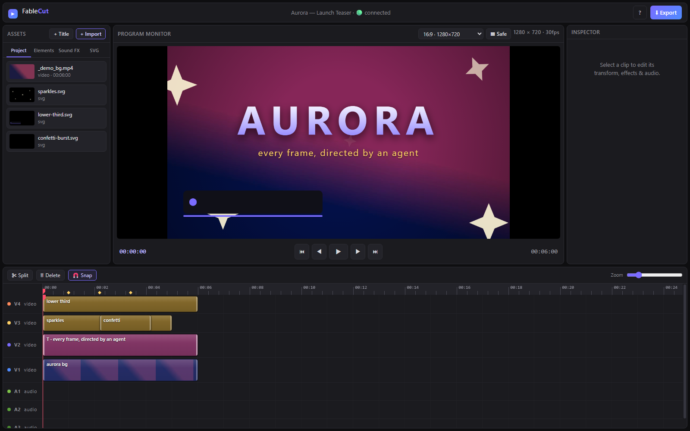

Motion that reads like a pro cut
Keyframe 25+ properties with easing. Speed ramps that time-remap the video and the audio mix together. Camera shake and RGB-split, both animatable. 17 transitions from clean fades to whip-pans and glitch.
A Premiere-style editor whose whole timeline is one JSON file. Any agent that writes JSON can edit video.
Zero npm dependencies. One node server.js. MIT licensed.
Front page of Hacker News Top 7 posts of the week #8 JS repo of the day Official MCP registry Awesome MCP Servers

No timeline dragging, no keyframing by hand. An agent wrote project.json in a real session while the browser reloaded in real time. What you see is the actual output.
If you cut video but have never let software do the cutting, here is the whole idea in three steps. No coding required to follow along.
Ask in plain language: cut this to the beat, drop in a title, grade it cinematic. An agent is simply software that reads your request and acts on it.
Your whole edit lives in one text file, project.json: clips, tracks, effects, keyframes, transitions. The agent edits that instead of clicking around.
The open editor reloads in about 150 milliseconds. The timeline updates in front of you. Nudge anything by hand, then export when it feels right.
Most AI video tools hide the edit behind a black-box API. FableCut does the opposite: the timeline is a plain document, and anything that can write it can edit video. A human and an agent can work the same timeline at once.
{
"fps": 30, "width": 1080, "height": 1920,
"clips": [
{
"kind": "video", "track": "V1",
"start": 0, "in": 2.5, "duration": 3.4,
"props": { "filterPreset": "teal-orange" },
"keyframes": {
"scale": [{ "t": 0, "v": 1 },
{ "t": 3.4, "v": 1.18 }]
}
}
]
}Everything a modern reel needs, drivable by hand or by an agent.
Keyframe 25+ properties with easing. Speed ramps that time-remap the video and the audio mix together. Camera shake and RGB-split, both animatable. 17 transitions from clean fades to whip-pans and glitch.
Filter presets, from cinematic to cyberpunk, plus full grade controls and Premiere-style adjustment layers.
In-browser person cut-out via MediaPipe. Green-screen chroma key with spill suppression too.
Typewriter, word-pop, karaoke, letter-pop, wave and bounce. Neon glow for the short-form look. Any Google Font by name, or drop in your own.
FableCut
Hand it a reel you like. It detects shots, beats, BPM and the drop, then hands back an edit blueprint.
A first-class svg kind, rendered frame-accurately from CSS keyframes. Author your own stickers and lower-thirds.
Four video and three audio tracks, multi-select and split, beat markers you can tap on the fly, decoded audio waveforms, and CRF-18 MP4 export that renders each frame through the same compositor you preview with.
Node 18+ and a Chromium browser. ffmpeg on PATH is optional but recommended for fast export.
git clone https://github.com/ronak-create/FableCut.git
cd FableCut
node server.jsOpens at http://localhost:7777. Since v1.3.1 it binds to localhost only.
claude mcp add -s user fablecut -- \
node "/path/to/FableCut/mcp-server.js"Registers the MCP server for every Claude Code session. Full setup in the README.
Fetching the newest version from GitHub.